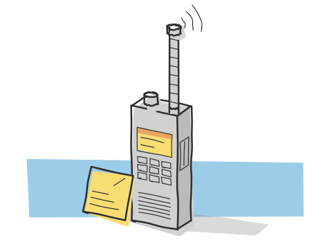

zero to vu36da: how i got a ham radio licence in india in ten days

on 24 october 2026 i applied for an amateur radio licence. on 3 november the wireless planning and coordination wing of the department of telecommunications issued it, with the callsign vu36da, valid for twenty years. in between there was a four-day crash plan, a mock test i rushed and nearly failed, eleven wrong answers in a public answer key, and an exam at the wireless monitoring station in jalandhar. this is the whole thing, scores included, the bad ones too.
why a radio licence
i'm a computer science student. my home is in namakkal, tamil nadu. my college is in punjab, about two and a half thousand kilometres away. i already run a server at home that i manage from my hostel, so the idea of a radio at home that i could also reach from here was hard to let go of. the first goal was to talk over radio between the two places. the longer one is to make contacts abroad on hf.
in india you can't transmit on amateur bands without a licence, and the licence needs an exam: the amateur station operator's certificate, or asoc. there are two grades, restricted and general. restricted is the entry grade and has no morse test, so that's where i started.
the short version
| callsign | vu36da |
|---|---|
| grade | amateur restricted grade (asoc) |
| issued by | wpc wing, department of telecommunications, new delhi |
| applied | 24 october 2026, on saral sanchar |
| exam | 30 october 2026, 2 pm, wms jalandhar. passed, result the same day |
| issued | 3 november 2026 |
| valid until | 2 november 2046 |
| rules | telecommunication (amateur service) rules, 2024 |
| cost | ₹100 exam fee. every study resource i used was free |
the timeline
24 oct applied on saral sanchar (restricted, jalandhar centre)
paid ₹100 on bharatkosh
readiness check, before any study: 85%
planned four weeks of prep
26 oct e-admit card arrives. exam is friday. four days.
four weeks becomes four days
26-28 crash plan
29 oct full mock 87%. a real-style test: 60%, in 14 minutes
drilled 169 questions from three public pools
30 oct exam at wms jalandhar, 2 pm. passed, same day
03 nov licence issued: vu36da, valid to 2046
the readiness check said 85% before i'd studied anything. that number lied to me a little. it was a twenty-question quiz, and it made the exam feel closer than it was. the first real topic quiz, on basic electricity, came back at 50%.
how to apply, step by step
this is the process as i went through it in october 2026. the portal is saral sanchar, run by the department of telecommunications.
- register and apply on saral sanchar. pick the grade (restricted for a first licence) and an exam centre. mine was the wireless monitoring station (wms) in jalandhar, the nearest to college.
- pay the exam fee, ₹100, through bharatkosh, the government's payment portal.
- upload the documents: photo, signature, date-of-birth proof, id proof, address proof, station address proof, a self-declaration of nationality, and the signed application. i used my passport for nationality, with the self-declaration.
- scrutiny. the application goes to the examiner at the wms you chose.
- the e-admit card arrives. mine came two days after applying, for an exam four days later. be ready before you apply, not after.
- exam day. report thirty minutes early with the admit card and an original id.
- results can come the same day. mine did. then you apply for the licence itself on saral sanchar.
- the licence certificate comes from the wpc wing with your callsign, valid for twenty years.
two gotchas. the portal showed "not verified! plz upload again" next to my station proof, but the pdf was fine and nothing needed re-uploading. and i'd left the passport-validity field blank on the self-declaration, so i emailed the examiner a corrected copy. small things, but with a four-day window you don't want to be fixing paperwork.
the pass mark is 40% of total marks, under rule 5(5) of the 2024 rules.note read the rules pdf yourself. it's short, it's free on the department of telecommunications site, and a whole section of the exam is about it. that sounds low. it isn't a reason to relax: my one rushed mock landed at 60%, which is a pass on paper and a coin toss on the day.
the four-day crash plan
i'd planned four weeks. on monday the admit card said friday. so i cut the syllabus into four days, theory first, rules after, mocks last.
| day | topics |
|---|---|
| mon 26 | fixing earlier misses, q-codes, abbreviations, phonetics, rst, receivers (superhet), modulation, emission designators. evening: four revision rounds |
| tue 27 | transmitters, propagation (ionosphere layers, skip zone, muf), antennas, feed lines, swr, decibels. night: rules, part one |
| wed 28 | rules, part two (restricted bands and power limits, the logbook, third-party messages), diodes and power supplies, distress signals |
| thu 29 | full mocks, the question-pool drill, fixing weak areas |
| fri 30 | light revision. exam at 2 pm |
how i studied
no videos, no long chapters. i learned each topic through step-by-step interactive explainers with diagrams, and only then took a quiz on it. teach first, then quiz. i tried it the other way, quizzed cold, and it didn't stick: i was guessing, not learning.
after every quiz i drilled only the questions i'd missed, again and again, until they were fixed. not the whole quiz. just the misses. that one habit did more than any resource.
everything was free: the readiness check on asoc prep india, the tests and question pools from vu2jxm's site, the official 2024 amateur service rules, and lcwo.net for morse later. i skipped the ₹300 premium tier on the prep site and wrote my own quizzes instead.
every score, including the bad ones
readiness check (no study) ........ 85% first electricity quiz ............ 50% → redo 88% receivers quiz .................... 50% → misses drill 100% revision rounds, monday night ..... 92% / 100% / 81% / 80% transmitters + propagation ........ 85% (propagation 10/10) antennas / swr / db ............... 87% rules, part one ................... 100% rules, part two ................... 75% diodes / power supplies ........... 92% full mock 1 ....................... 87% → misses drill 100% real-style test ................... 60% (rushed, 14 minutes) pool drill, 169 questions ......... theory 74% / 64%, rules 80% the exam .......................... passed
two 50s on monday. that's what the start of a topic looks like when you actually test yourself. both turned into 88% and 100% within hours, because the drill was only the misses.
the line that taught me the most is the 60%. it was a real-style test, theory and rules, and i finished it in under fourteen minutes. theory came back at 48%, rules at 72%. i knew the material. i just wasn't reading the questions. on exam day i made myself slow down and read every option, and every question twice when it said not.
the traps that nearly got me
these are the questions i got wrong more than once. if you're sitting the asoc exam, check yourself against each one.
| what i kept answering | what's right |
|---|---|
| three 300 Ω resistors in parallel: 300 Ω | 100 Ω. equal resistors in parallel divide: r / n |
| a signal report for voice: 599 | 59. the third digit is tone, so it only applies to cw. i missed this three times |
| a capacitor at dc: zero reactance | infinite. it blocks dc. the inductor is the one that's zero at dc |
| class c for every amplifier | ssb needs a linear amplifier, class a or ab. class c is for fm and cw |
| 21 mhz from a 7 mhz transmitter: 2nd harmonic | 3rd. harmonics are n × f, and 21 = 3 × 7 |
| 6 db: twice the power | four times. 3 db doubles, so 6 db doubles twice |
| a dipole's impedance: 300 Ω | 73 Ω. 300 Ω is the folded dipole |
| restricted grade on 2 m: 50 w | 10 w. 50 w is hf voice |
| man overboard: securite | pan pan, urgency. securite is safety, like a storm warning |
and two that aren't facts at all: reading not questions too fast, and rushing. the second one is the 60% above.
don't trust the answer key
on thursday i drilled all 169 questions from three public question pools. eleven of the keyed answers were wrong when i checked them against the textbook and the rules.note eleven out of 169 is about one in fifteen. enough to quietly teach you the wrong thing if you memorise keys instead of understanding them. if i'd memorised the keys, i'd have walked in knowing eleven wrong things with full confidence.
it's the same lesson as everywhere else in engineering: a source being popular doesn't make it correct. when a key disagrees with the rules, the rules win. when it disagrees with the physics, work it out.
exam day at wms jalandhar
friday 30 october, 2 pm, at the wireless monitoring station in jalandhar. i did light revision in the morning, nothing new, and got there early. i took my time, which after thursday felt strange, and read every not twice.
the result came the same day. passed.
at the centre i got talking to another candidate, a ham who already held a restricted licence and was there to sit the general exam. he later added me to the panjab amateur radio society group. it's a small thing, but it's how this hobby works: the people already in it pull you in.
the licence certificate came through on 3 november. callsign vu36da. a few days later i was listed on qrz.com.
can i operate from college?
this was my first question after passing. my station is registered at home in tamil nadu, and i live in punjab for most of the year. my reading of the 2024 rules:
- temporary or portable operation away from the registered location is allowed without separate permission.
- i use the plain callsign, vu36da. the rules don't require /p.
- the logbook must record the temporary location. times are in ist, and the log is kept for one year.
restricted grade limits are 50 w on hf voice and 10 w on 6 m, 2 m and 70 cm. the 30 m band is general grade only.
what i'm building next
a licence with no radio is just a certificate. this is the plan.
home (tamil nadu) hostel (punjab) +----------------------+ +----------------------+ | sbitx v3 hf rig | | vhf/uhf handheld | | for long distance | | for short range | | | | | | | raspberry pi |<-------->| laptop / phone | | remote rx + tx | tailscale| runs the home rig | +----------------------+ +----------------------+
- hf at home: an sbitx v3 from hf signals, for long-distance contacts.
- remote operation: a raspberry pi next to the rig, reachable only by me over tailscale, so i can receive and transmit from college. it's the same pattern as the home server: private access, nothing exposed to the internet. that'll be its own post once it's built.
- at college: a small vhf/uhf handheld to start.
- portable: i want to operate outdoors. the budget is around ₹10,000 for a portable radio that reaches as far as possible.
- the general grade: it includes morse, so i'm learning on lcwo.net.
questions people ask me
how long does it take to get a ham radio licence in india?
for me, ten days: applied 24 october 2026, exam 30 october, licence issued 3 november. the admit card came only four days before the exam, so start studying before you apply.
what is the pass mark for the asoc exam?
40% of total marks, under rule 5(5) of the telecommunication (amateur service) rules, 2024.
how much does the asoc exam cost?
the exam fee was ₹100, paid through bharatkosh. everything i studied from was free.
how long is an indian amateur radio licence valid?
twenty years. mine was issued on 3 november 2026 and is valid until 2 november 2046.
can i operate away from my registered station address?
my reading of the 2024 rules is yes: temporary or portable operation away from the registered location is allowed without separate permission. the logbook has to record the temporary location, in ist, and be kept for a year. the plain callsign is fine; the rules don't require /p.
what power can a restricted grade operator use?
50 w on hf voice and 10 w on 6 m, 2 m and 70 cm. the 30 m band is general grade only.
what i actually learned
not just ohm's law. what i learned was how to learn fast without fooling myself: explanation before quiz, drill only the misses, check the key against the source, and slow down when you think you already know. a 60% in fourteen minutes taught me more than the 100s did.
if you hear vu36da on the air, that's me. 59, not 599.
cite as: dharun ashokkumar, "zero to vu36da: how i got a ham radio licence in india in ten days", dharun.dev, 13 november 2026.
written by dharun ashokkumar · more reflections